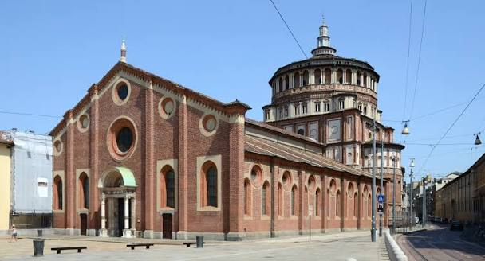
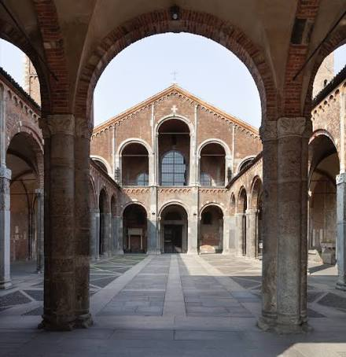
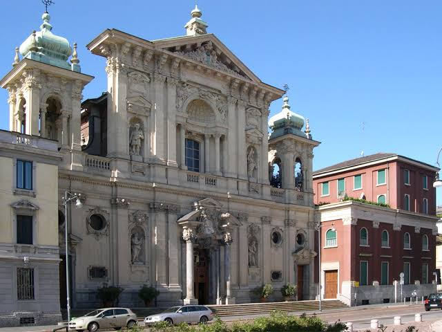
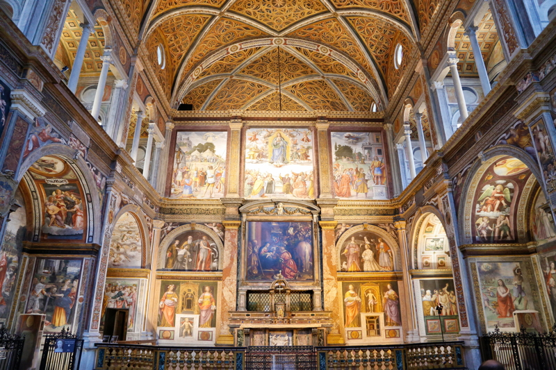
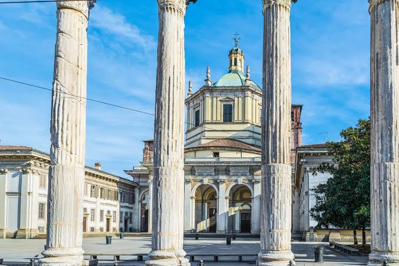
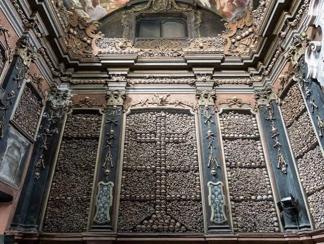

Milão religiosa ✨
Milão é uma cidade onde a fé e a arte se encontram em templos que atravessam séculos. Suas igrejas não são apenas locais de culto, mas verdadeiros tesouros históricos e artísticos. Muitas delas exigem vestimenta adequada (ombros e joelhos cobertos), e participar de uma missa pode ser uma forma de visitar gratuitamente lugares como o Duomo.
Duomo di Milano

História: Construção iniciada em 1386, e encerrada em 1965 levou seis séculos para ser concluída. É a quarta maior igreja cristã do mundo.
Horários: Diariamente das 9h às 19h (última entrada 18h10). Missas pela manhã e solenidades podem restringir acesso turístico.
Ingressos: Entrada simples €5; terrazas €15 (escadas) ou €20 (elevador); combo completo €20–27. Participar da missa é gratuito.
Dica dos Ussinhos 🐻💡: Subir às terrazas no fim da tarde oferece vistas mágicas do pôr do sol.
Santa Maria delle Grazie

História: Fundada em 1463 por ordem de Francesco Sforza, foi ampliada por Ludovico il Moro, que encomendou a Bramante o apse e a cúpula renascentista. Entre 1495 e 1498, Leonardo da Vinci pintou A Última Ceia no refeitório. Durante a Segunda Guerra Mundial, em 1943, bombardeios destruíram parte do convento, mas a obra foi salva graças a sacos de areia. Em 1980, a igreja e o mural foram declarados Patrimônio Mundial da UNESCO.
Horários: Terça a sábado (7h–13h e 15h–19h30); domingos até 21h. Fechada às segundas.
Ingressos: Igreja gratuita; visita ao Cenacolo Vinciano a partir de €17, com reserva antecipada. No primeiro domingo do mês é gratuíto, mas exige reserva antecipada.
Dica dos Ussinhos 🐻💡: Visitação à obra é de 15 minutos exatos. Por isso chegue 30 minutos antes do seu horário para não perder nada.
Basilica di Sant’Ambrogio

História: Fundada por Santo Ambrósio em 379–386, inicialmente chamada Basílica dos Mártires. Tornou-se centro da identidade cristã de Milão, abrigando os corpos de Protásio e Gervásio. Reconstruída em estilo românico no século XII, foi palco de coroações imperiais e reformas conduzidas por São Carlos Borromeo após o Concílio de Trento. Sofreu danos nos bombardeios de 1943, mas foi restaurada.
Horários: Segunda a sábado 7h30–12h30 e 14h30–19h; domingos 8h–13h e 15h–20h.
Ingressos: Entrada gratuita.
Santa Maria Segreta

História:Igreja paroquial discreta, mas significativa, pois foi frequentada por São Carlo Acutis. Ele servia como catequista, ajudava na criação do site da paróquia e rezava diariamente diante do sacrário. Hoje, a igreja guarda relíquias suas e recebe peregrinos atraídos pela espiritualidade do “santo da internet”.
Horários: Todos os dias: 7h00–12h00 e 15h30–20h
Ingressos: Entrada gratuita.
Curiosidade dos Ussinhos 🐻💡:Na frente dessa igreja, no dia de São Carlo Acutis (12 de outubro), os ussinhos conheceram o Rajesh, que foi segurança e amigo de São Carlo Acutis. Ouvimos histórias de um santo diretamente de quem viveu isso.
San Maurizio al Monastero Maggiore

História: Ligada ao maior convento feminino beneditino da cidade, documentado desde o século VIII. Reconstruída em 1503 por Gian Giacomo Dolcebuono e Giovanni Antonio Amadeo, foi ricamente decorada por Bernardino Luini e sua família, discípulos de Leonardo. Por seus afrescos, é chamada de “Capela Sistina de Milão”
Horários: Terça a domingo, 10h–17h30. Fechada às segundas.
Ingressos: Gratuito.
Basilica di San Lorenzo Maggiore

História: Uma das mais antigas basílicas da cidade, construída entre 390 e 410, quando Milão era capital do Império Romano do Ocidente. Sofreu incêndios e colapsos ao longo dos séculos, mas manteve sua planta central tetraconca, considerada a primeira do Ocidente. A Cappella di Sant’Aquilino guarda mosaicos paleocristãos e possivelmente serviu como mausoléu imperial.
Horários: Segunda a sexta 8h–12h30 e 14h30–18h; sábado 9h30–12h30 e 14h30–18h; domingo 9h30–13h e 15h–19h.
Ingressos: Entrada gratuita; Cappella di Sant’Aquilino cerca de €2.
A Capela dos Ossos – San Bernardino alle Ossa 💀

História: Originada em 1210, quando o cemitério vizinho ficou lotado. Uma sala foi construída para guardar ossos, e em 1269 surgiu a igreja. No século XVII, as ossadas foram incorporadas às paredes como decoração barroca. Em 1712, um incêndio destruiu parte da estrutura, reconstruída em estilo maneirista por Carlo Giuseppe Merlo. A capela inspirou até a famosa Capela dos Ossos de Évora, em Portugal.
Horários: Segunda a sexta 8h–18h; sábado 9h30–18h; domingo 9h30–12h.
Ingressos: Gratuito
Regras de vestimenta 👗
- Ombros e joelhos cobertos
- Evitar roupas muito curtas ou decotadas
- Algumas igrejas oferecem lenços para cobrir-se